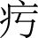
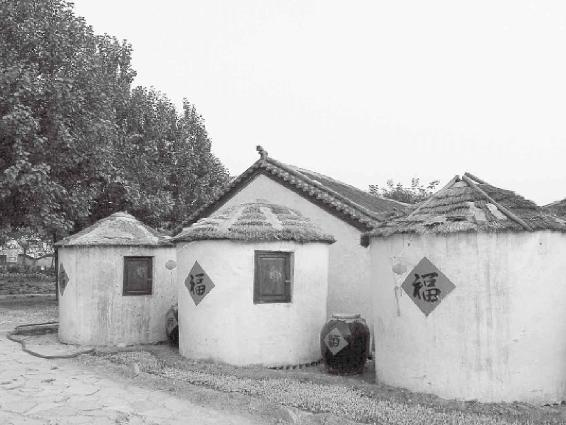
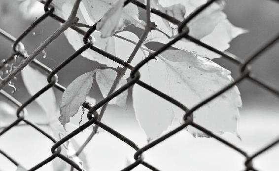
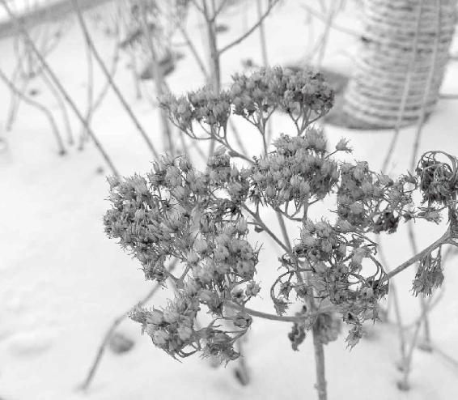
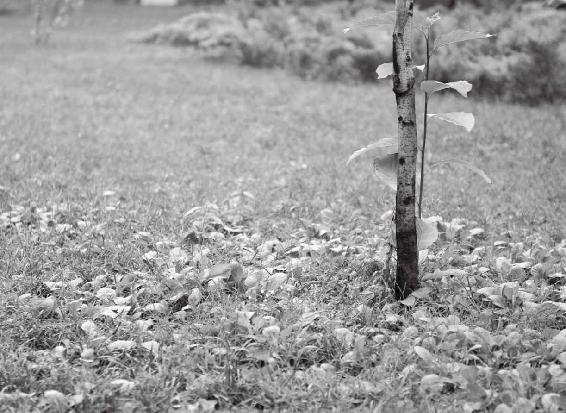

第八章：人的心是与南方、红色和谐共振的
南方、赤色会鼓舞人的心气
耳朵听到的东西都可能通心
有一种病叫“心气内洞”
心病是挺重的病
为什么良药都是苦的
火其实是一个煽动人心、煽情的东西
羊肉是补益我们的心气、心血的
吃素且抑郁的人，多吃黄米去
火星的变化会影响到人的心臟
心脑血管病——涉及到血管的病都跟心有关
心气虚的人，要多听so音调的歌
“二”和“七”是心气虚之人的吉祥数
闻焦味能鼓舞人的心气
号脉为什么神奇
要补肾，走路脚后跟就要着地
有胃气则生，无胃气则死：厌食症要当心病去调治
“非其人勿授，非其人勿传”
为什么《黄帝内经》大约有三分之一的篇幅都在讲脉
为什么中国古代不时兴戴戒指，时兴戴个镯子
经文：
南方赤色，入通于心，开窍于耳，藏精于心。故病在五臟。其味苦，其类火。其畜羊。其榖黍（shu）。其应四时，上为荧惑星。是以知病之在脉也。其音徵。其数七。其臭焦。
1.“南方赤色，入通于心”
南方、赤色会鼓舞人的心气
不要轻易去长途旅行
梁冬：我们接着讲“南方”！
徐文兵：方位转到南边了。我们在北半球，如果到了南半球的澳大利亚、南非，正好反过来，就成了北方了。
梁冬：香港有一个堪舆学家叫苏民峰，他年轻的时候专门去了南半球的澳洲考察风水，发现当地的风水格局恰好与香港相反。
徐文兵：我们不要轻易去长途旅行，要慢慢适应。因为人的气血流动变化和地域环境是有关系的。突然去改变这种关系，就可能会得一些莫名其妙的病。很多人跑到西藏，回来以后闹了一身怪病。很多人想去两极探险，却从来不想想，那些地方都是没有人烟、寸草不生的地方，不适合人类居住，跑那儿去干吗？那当然是找地狱呢！现在科学发达了，交通工具也方便了，可以一日千里、飞得很远，但是得病的机会也增多了，这是很危险的。
我们不要轻易去长途旅行，要慢慢适应。因为人的气血流动变化和地域环境是有关系的。突然去改变这种关系，就可能会得一些莫名其妙的病。
每一种红里面的信息能量都不一样
梁冬：“南方赤色，入通于心”是什么意思呢？
徐文兵：中国古人把南方、赤色、人的心联系到了一块儿。
梁冬：“赤”和“红”有什么不一样？
徐文兵：赤和红，英文叫red，这种color的颜色有好多种。赤——赤卫队；红——红军。
梁冬：还有朱。
徐文兵：红到了极点，就是红得发紫；还有“赭（zhe）”，中药里有个“代赭石”；还有一种鸡血石；还有朱砂。中国人用这么多不同的字来表现红的颜色，同样一个红，形容却不一样，代表的信息能量也不太一样，所以有的叫正红，有的叫朱红，还有的叫桃红。
什么样的人适合用红色
徐文兵：有一门学问叫“色彩治疗学”，就是让不同的病人去看不同的颜色，最后达到一种平衡和谐的效果。道家有句话叫“五色令人盲”，现在令人眼花缭乱的东西太多了、感官刺激太多了。比如，现在电影中的画面全是强刺激、强色彩，看完以后，连讲的啥故事都不知道。所以，这都叫“悦目而不赏心”，我真怀念以前那种黑白电影和老照片，色彩不是特别丰富，但给人留下来的想象空间特别大。
因为看到红颜色会鼓动到人的心气，所以，中国人把红色当成喜庆的颜色。
因为看到红颜色会鼓动到人的心气，所以，中国人把红色当成喜庆的颜色。心主喜，肝主怒。所以，哀伤的人、悲愁的人适合用点红的颜色。
从七情对应来讲，心主喜，肝主怒。所以，哀伤的人、悲愁的人适合用点红的颜色。那么，疯狂的人，登高而歌、弃衣而走、夜不能寐、两眼血红的人千万不要用这个颜色。
那他们适合什么颜色？黑色！本来心气就很高，给他们布置房间，再用点红的肯定不行。像我看到几个大龄剩女家里布置的颜色，都是赤红的。
梁冬：南方的一些发廊经常会搞成这样。
徐文兵：人除了结婚那天晚上“只恐夜深花睡去，故烧高烛照红妆”以外，平常最好少用那种颜色。用赤色把自己的心火煽得那么亮，最后还没着没落，人肯定会出问题，这就需要调整颜色。
用赤色把自己的心火煽得那么亮，最后还没着没落，人肯定会出问题，这就需要调整颜色。
2.“开窍于耳”
耳朵听到的东西都可能通心
梁冬：“开窍于耳”，这个我就不明白了，常常说“肾开窍于耳”，为什么这个地方讲“入通于心，开窍于耳”呢？
徐文兵：《黄帝内经》是黄帝学派集大成的一本书。我告诉那些反中医的人，反中医的最好方法不是用科学的方法去反中医，而是用中医的方法反中医。《黄帝内经》中有很多论述，比如，哪种味道入哪个臟、起什么作用——它有自相矛盾的地方，有不大一致的地方，这时候要想一想，它背后是指什么。我们经常说一句话，“视而不见，听而不闻”，为什么会“听而不闻”呢？
梁冬：因为心不相应。
徐文兵：心不在焉、心神不在那儿。接受外来刺激后，如果你的心不去应它，它对你来说就没有刺激。“泰山崩于后，麋鹿戏于前”，无论多大的刺激，我没反应，还在专心看书，或者禅定、静坐，其实那会儿我的心神是收回来的。“开窍于耳”，耳朵也是心神出窍的一个窍道。耳朵属于肾，心开窍在咽喉——扁桃体包裹的咽喉处。很多人一紧张嗓子就干、就咽唾沫；很多人说，心火一旺，嗓子就红了、肿了；还有很多人说，我有慢性咽炎——其实他们是有慢性心病，因为渴望、焦虑没有得到满足。
接受外来刺激后，如果你的心不去应它，它对你来说就没有刺激。
很多人一紧张嗓子就干、就咽唾沫；很多人说，心火一旺，嗓子就红了、肿了；还有很多人说，我有慢性咽炎——其实他们是有慢性心病，因为渴望、焦虑没有得到满足。
梁冬：我们公司有一位同事是火相人格，经常“嗯嗯嗯”“咳咳咳”，原因就在这里。
徐文兵：很多相面的“望闻问切”，根据人的耳朵大小来判断人的寿命。其实就是说，肾是藏精的，耳朵大的人容器大，证明底子厚，有可能活得长；很多人的耳朵小，或者耳轮比较薄，说明他们的先天肾精可能有点不足。
肾是藏精的，耳朵大的人容器大，证明底子厚，有可能活得长。很多人的耳朵小，或者耳轮比较薄，说明他们的先天肾精可能有点不足。
为什么开国皇帝就走运，末代皇帝就背运呢
徐文兵：真正古代堪舆风水的那些人是能体会到气的。现在很多人是肉眼凡胎，他们观察风水：左青龙右白虎——后面靠山，前面踏一条河，废话！肉眼凡胎的人都能看见这些。十三陵风水哪儿变了？是山变了还是水变了？哪儿也没变，那为什么开国皇帝就走运、末代皇帝就背运呢？因为气变了！古代真正的风水大师能体会到气的存在，而能体会到气的存在的人要么就“生而神灵”，要么就是后天老师教的——通过一定的修身修心的方法体会到的，是有师承，而且有考核的。不像现在有的人出来顶个头衔——我是几代传人，我是大师……
为什么开国皇帝就走运、末代皇帝就背运呢？因为气变了！
梁冬：现在大师都贬值了，因为“通货膨胀”。
3.“藏精于心”
有一种病叫“心气内洞”
梁冬：前面讲到“南方赤色，入通于心，开窍于耳，藏精于心”，而“入通于肝，开窍于目，藏精于肝”说的是东方。具体到南方，或者是说“火”这样一种气，就是“藏精于心”。
徐文兵：像东方，它对应的臟是肝，肝就是藏它们精气的地方。我们讲臟腑的时候说过，什么叫“腑”——传化物而不藏；什么叫“臟”——藏精气而不泻。
肝藏的精气支撑东方这套系统去工作。而南方的这套系统是靠“心”来支撑，靠肉质的“心”藏的精气、精血来支撑这套系统去工作。当一个人的“心”出了问题，他的物质基础就崩溃了。有一种病叫“心气内洞”，说的就是这个人漏精、漏气了。
当一个人的“心”出了问题，他的物质基础就崩溃了。
4.“故病在五臟”
心病是挺重的病
梁冬：什么叫“故病在五臟”？
徐文兵：“心者，君主之官”—— “心”是人体最后一道防线，当一个人病到“心”时，其实已经病得很深了。前面说过，肝病发在什么地方？“发病惊骇，病在头项”，春天来了，人容易得头痛病；到了心这套系统，就很严重了——病在五臟。
“心”是人体最后一道防线，当一个人病到“心”时，其实已经病得很深了。
有人问：“徐大夫，我得了什么病？”
我说：“你得的是挺重的心病。”
他又问：“心病是什么意思？”
我说：“挺重的病！”
病在五臟。一般我们都是 “舍车保帅”，先舍体后舍身，先舍腑后舍臟、舍到最后不能再舍了——就是心病！
5.“其味苦”
为什么良药都是苦的
平常吃苦吃得少，积聚到一定程度就会来一场病
梁冬：“其味苦”，作何解释？
徐文兵：什么味道能通到你的心气呢？苦味。
梁冬：所以，良药都是苦的， 良药苦口利于病。
徐文兵：按照刘力红老师的解释，病——丙丁火都是心病。所以，苦味药都能通心调神，最后治你的病。为什么百分之七八十的中药都是苦的？因为很多病都是心病，而且我们饮食里面缺苦味。
苦味药都能通心调神，最后治你的病。为什么百分之七八十的中药都是苦的？因为很多病都是心病，而且我们饮食里面缺苦味。
梁冬：平常吃苦吃得少，到时候需要的时候就吃点苦，要平衡嘛！
徐文兵：平常吃苦吃得少，积聚到一定程度就会来一场病。最后，出现一位聪明的医生，开点苦药，一吃，好了！
梁冬：年轻的时候吃点苦，对年老是有帮助的。
徐文兵：年轻时候多吃苦，老的时候就吃甜了。年轻的时候老吃甜，牙都掉了，到老了啥也吃不着了。
说到 “其味苦”，我们平时的饮食里面，最不缺乏的是甜食，平常还会吃点儿辛辣的。有些人还吃点水果，酸的。“十个厨子九个咸，还有一个忘了加盐。”咸味也不缺，唯一缺了苦味。有人会有意识地补充一点儿苦味。他觉得吃点苦以后，能够有胃口、舒服。比方说有些人会喝点儿苦丁茶；有些人会喝点儿苦咖啡——人家很有品味，喝咖啡不加糖；有些人还会吃点苦瓜，或者炒点苦菜。但是有意识地这么吃的人不多。有觉，就是说要有自己的感觉。现在很多人的知觉已经被麻痹住了，所以最后都去求医。
苦味能够把人的那种邪恶的心火去掉，还能坚肾
徐文兵：吃苦最有名的人是谁？
梁冬：卧薪尝胆的勾践。
徐文兵：勾践卧薪尝胆，吃的是苦。这个苦味能够把人的那种邪恶的心火去掉。另外，苦的一个作用是“坚肾”——能够把肾精巩固住。所以，大家年轻时有意识地吃点苦，到老了绝对有好处。
苦味能够把人的那种邪恶的心火去掉。另外，苦的一个作用是“坚肾”——能够把肾精巩固住。所以，大家年轻时有意识地吃点苦，到老了绝对有好处。
梁冬：平常还有什么办法，能有意识地吃点苦呢？
徐文兵：喝茶。
梁冬：吃锅巴算不算呀？
徐文兵：算，锅巴属于饭焦。我经常让病人吃点烤馒头片儿、吃点锅巴，但现在的商品化锅巴是油炸的锅巴，只有香味，没有苦味了。其实，真正地让一个人去吃苦，挺不容易的。我有时候自个儿熬点药喝，一尝这药这么苦，我就想，那么多病人整天在喝我开的这付苦汤子，而且一喝那么长时间,如果对我没有点儿信任感还真是喝不下去。但是，在这里郑重强调一下:吃点苦对心和神是有好处的。
梁冬：很多人在人生当中也是这样,偶尔吃一点点苦，反而更容易体会到幸福感。
徐文兵：不吃苦的话，你就体会不到现在有这么多好吃的东西。所以，苦味有时候被作为开胃菜——当你觉得没什么食欲、吃不下饭的时候，饭前吃点苦的东西，就觉得有胃口了。另外，吃苦也得掌握一个度——我们用少量的苦，能够帮助人开胃，但苦吃多了也会伤胃。
吃苦也得掌握一个度——我们用少量的苦，能够帮助人开胃，但苦吃多了也会伤胃。
梁冬：为什么吃苦瓜、黄连，有时候会腹泻呢？
徐文兵：因为受寒了。
梁冬：苦是寒的。
徐文兵：苦也有温的，锅巴和烤馒头片就是苦温的，半夏也是苦温的。
梁冬：为什么有苦寒和苦温之分呢？
徐文兵：这就看你中的是什么样的邪气了。一般人都是心火，大多患热症，我们可以用苦寒的药；还有人心里面中了寒性的毒——患抑郁症的很多人都是心结，心中有解不开的疙瘩，摸上去绝对不是火、绝对不热。这些人全是中了寒性毒，必须用温性的药才能化开。
6.“其类火”
火其实是一个煽动人心、煽情的东西
梁冬：“其类火”如何解释？
徐文兵：前面讲肝胆的时候，是“其类草木”。木生火，把草木点着了以后会产生火焰，这时候那种无形的火的存在，就是对应了我们的心。所以，心气虚的人或者是心火弱的人，在点燃一堆篝火的时候，会突然眼睛就流泪了，然后，觉得有一种暖洋洋的感觉，其实这就叫感应。
古代的篝火晚会都跟求爱有关，火都能够撩拔人的欲望。篝火的“篝”与交媾的“媾”都跟火有关，火其实是一个煽情的东西。你把某种东西点燃、煽动起来以后，能够拨动人的心绪。
火其实是一个煽情的东西。你把某种东西点燃、煽动起来以后，能够拨动人的心绪。
7.“其畜羊”
羊肉是补益我们的心气、心血的
梁冬： “其畜羊”作何解释呢？
徐文兵：就是参加篝火晚会，又要了一只烤全羊。有段时间我研究饮食，把鸡和羊调了一下，因为羊是吃草的，对应一下肝胆更好，鸟是朱雀，对应南方丙丁火更好。但是我们要尊重《黄帝内经》，《黄帝内经》把羊归到了心，在心火里面。羊肉是非常温性的一种东西，中国的很多汉字、很多词都跟羊有关。
梁冬：善良的“善”，吉祥的“祥”，美好的“美”，繁体字義薄云天的“義”都跟羊有关。
徐文兵：我估计这一现象跟我们中华民族的文化有关。从狩猎到驯化动物，可能最早被驯化的、支撑我们饮食结构的就是羊。按照《黄帝内经》的理论，羊肉是补益我们的心气、心血的。《伤寒论》中有个方子，叫当归生姜羊肉汤，用于调治妇人腹中 
肚子里边是空的、疼的，这是虚寒证，可以使用当归生姜羊肉汤。
明末清初，山西出了一个名医大家，叫傅山，傅青主。你要说他是个好医生，那简直就是贬低人家。傅青主是个哲学家、书画家，尤其是那书法简直是一流，他只是顺道做一个好医生。
傅青主有一个非常著名的食疗方子，当时是给他妈妈配的。很多好中医的父母都很长寿，原因就在于他们有一个懂医、尽孝的儿子，尽孝且懂医，懂医且尽孝。
傅青主当时设计这个方子，是为了滋补他母亲虚弱的身体。方子里面主要成分就是羊肉，还有其他一些配料。他给这道药膳起了个名儿叫“头脑”。因为有羊肉块儿、还有点炒面糊糊，炖出来就好像脑浆一样的感觉。他把这个专利转让给一家回民饭馆，厨师将其变成了一道补益人的精血的名菜。这道菜蘸的调料也特讲究——蘸的是韭菜，而且这个韭菜是拿盐腌的，叫咸韭，这正好是一道非常好的补心、补肾的药膳。
中国讲究药食同源，而最有名的拿羊肉做的药膳有两道：一是张仲景的“当归生姜羊肉汤”；另一个就是傅青主的“头脑”。
中国讲究药食同源，而最有名的拿羊肉做的药膳有两道：一是张仲景的“当归生姜羊肉汤”；另一个就是傅青主的“头脑”。
梁冬：据说，吃不同地方的羊肉，味道也不一样：散养的羊跟吃饲料长大的羊相比，它们身上肉的味道是不同的。
徐文兵：另外，山羊肉跟绵羊肉也不一样。
8.“其榖黍”
吃素且抑郁的人，多吃黄米糕
梁冬：“其榖黍”，作何解释？
徐文兵：黍子。有一个成语叫“一枕梦黄粱”，那个黄粱就是黍。黍是北方专门出产的一种黄米，它比小米要大，黏性非常好。南方人吃的年糕是拿白糯米做的。我们北方人吃的是黍，叫黄米。内蒙古、山西等地都经常吃黄糕，金黄金黄的，特别软、特别黏。我们一般吃素糕，就是不加任何调料，蒸熟了吃；也可以吃炸油糕，把黄米糕蒸熟后，包上豆沙，或者包上菜，包上糖，用油炸过再吃。
山西大同有句话叫“三十里莜面四十里糕”，说的就是粮食不同，它的耐饥耐饿的效果也不一样。吃大米以后很容易觉得饿，为什么呢？一般的大米蛋白质含量低，有些地方种两季稻、三季稻，大米产出来基本上都是淀粉。莜面是高寒地区出产的。燕麦、莜面这种粮食耐饥、耐饿，补充热量的性能很高，所以吃完莜面，人能走三十里不觉得饿；比莜面还厉害的就是黄糕，就是黍米做的。吃了黄糕后，人能走四十里。黍米是五谷之一，中医把黍归到了南方赤色，是补益人的心气的。碰上一个吃素且抑郁的人，不能给他吃鸡，又不能给他吃羊，怎么办呢？让他吃黄米糕。
中医把黍归到了南方赤色，是补益人的心气的。碰上一个吃素且抑郁的人，不能给他吃鸡，又不能给他吃羊，怎么办呢？让他吃黄米糕。
梁冬：现在很少能吃得到“黍”了，尤其在市区里面。
徐文兵：什么原因呢？一方水土养一方人。首先北京不是一个高寒的地方，所以，它出产的耐寒作物就不多。山西大同的海拔要比北京高1000米，冬天比较冷，夏天比较凉快，这种地方出产的东西正好提供给这方土地的人。如果食物的热量跟不上，这一地方的人就难以生存。到了西藏，当地人们吃的是糌粑、青稞、酥油，这些食物提供的能量就更得大了。
如果食物的热量跟不上，这一地方的人就难以生存。

一方水土养一方人。
9.“其应四时，上为荧惑星”
火星的变化会影响到人的心臟
梁冬：“其应四时，上为荧惑星”是什么意思呢？
徐文兵：荧惑星就是火星。我曾看过一则报道，上面说咱们国家也要发射一个探测器，去探测火星，就是指荧惑星。
有些东西你不知道，但却切实存在着。
10.“是以知病之在脉也”
心脑血管病——涉及到血管的病都跟心有关
梁冬： “是以知病之在脉也”作何解释？
徐文兵：心主血脉，这个脉有两种：动脉和静脉。
梁冬：动脉和静脉怎么区别？
徐文兵：运行新鲜的、含氧量高的、红色的血，而且一直在跳动的脉叫动脉；回流含氧量低、含二氧化碳多、含有一些废物的血的这种脉叫静脉。但凡心脑血管病——涉及到血管的病都跟心有关。现在流行的脉病首先是冠心病。
但凡心脑血管病——涉及到血管的病都跟心有关。现在流行的脉病首先是冠心病。
什么叫冠心病？冠状动脉粥样硬化性的病，简称冠心病。心臟本身也需要供氧，需要营养，本身也在工作，你不能“让马儿跑，又不让马儿吃草”。给心臟提供新鲜血液和营养的动脉叫冠状动脉。它像一顶帽子一样，扣在心臟上。当供应心臟的冠状动脉出现了问题，人就容易出问题。
现在的人动不动就做手术，先做一个支架——一般通过股动脉伸进去一个东西，把那儿支撑起来，“啪”一支，便开了。有的人连续放好几个支架，等过了三五年，支架又堵住了，怎么办呢？做搭桥——一看那儿堵了，切下来一段动脉血管接上，便建立起一个侧支循环。俄罗斯前总统叶利钦就做过搭桥手术。这其实都叫脉病，都是心病。
帮助身体自愈，这是最高级别的调治
徐文兵：原来人老说，动脉血管壁有粥样的硬化后，就好像有斑斑块块的东西附着在血管壁上。后来人们发明一种药，可以把斑块、粥样硬化的东西清掉。但是清掉以后，突然发现被清掉的那地方倒是没有斑块了，但是开始渗血了。
梁冬：这叫什么病呢？
徐文兵：其实，人体出现这种动脉粥样硬化，长这种斑块，是人在自救。身体感知到血管有脆裂，容易出血，就长一个东西，好像在那儿贴个胶皮一样，“哧儿”给它贴上，这是动脉粥样硬化的原因。当然，发现它堵住血管，把它清掉以后，会发现这儿往出渗血了。
梁冬：很多人以为动脉粥样硬化是我们的敌人，就把它清掉了，结果清掉之后，发现它其实是我们的朋友。
徐文兵：这就是说，如果把人当成机器，割裂开全身去分析一种疾病的话，就很容易犯一个错误——按倒葫芦起了瓢。为什么药物的毒副作用老是出现，其实就是说你调治好了一种病，另一种病又起来了。怎么办呢？只能宏观把握，去看看为什么。
如果把人当成机器，割裂开全身去分析一种疾病的话，就很容易犯一个错误——按倒葫芦起了瓢。
当一个人发烧的时候，你先想想他为什么发烧？是身体的自我保护反应，还是这个人的身体整个儿错乱了、在胡闹？
所以，当他的血液出现黏稠、动脉出现粥样硬化的斑块以后，你要先想想：是不是动脉血管壁或毛细血管出现脆裂所导致的？你要通过调理全身去调整它，让它最后达到一种自愈的目的，这是最高级别的调治。有些人认为他自己就是上帝，能主宰一切，于是横插一杠子去给病人调治。最后，调治好了一种病，却引起了很多其他的病。

调治好了一种病，却引起了很多其他的病。人生常常是得不偿失。
“父母在，不远游，游必有方”是有道理的
徐文兵：我们经常见的脉病有：大小动脉炎、血栓闭塞性脉管炎——从手指或者是脚趾的末端开始坏死，一节一节地往上坏，然后一节一节地往下切。
还有，现在旅行时出现的一种病叫“经济舱综合征”——经济舱长途飞行。坐这种经济舱的人下了飞机以后，很可能会突然出现猝死。为什么呢？原因就是座位比较小，加上他老不活动，在静脉里形成了瘀血——中医叫“瘀血”，西医叫“血栓”。下飞机的时候突然又活动起来，这瘀血或血栓就容易堵在血管里面，造成肺栓塞，肺一下子喘不上气来，有时候还会造成心臟骤停。
这都是坐经济舱的人容易出现的病——突然起飞和突然降落，再加上长途飞行和不运动，很容易造成心病。所以古人说，“父母在，不远游，游必有方”是有道理的。
突然起飞和突然降落，再加上长途飞行和不运动，很容易造成心病。
11.“其音徵”
心气虚的人，要多听so音调的歌
梁冬： “其音徵”，宫、商、角、徵（zhi）、羽的“徵”。徵是五音之一，相当于五线谱的5——do、re、mi、fa、so的so。
徐文兵：徵发so的音。心气虚或者心气弱的人，应该多听这种调子的音乐，或者是歌曲。
心气虚或者心气弱的人，应该多听这种调子的音乐，或者是歌曲。
很多事情都会影响身心，连听歌都是。
12.“其数七”
“二”和“七”是心气虚之人的吉祥数
梁冬：“其数七”是什么意思呢？
徐文兵：“七”是南方的数，是根据伏羲的“龙马负图而出”来的。伏羲看“河图”和“洛书”，把数字和观察到的现象联系起来。
南方对应着两个数，一个是“七”、一个是“二”。“二”和“七”对应的是“心”，所以心气虚的人的手机号应该多用 “二”和“七”这两个数字。我的电话就是137的，暗合“补益心气”——因为我出生那年水太过。水太过的好处是脑子够用，肾水比较足。但是有利就有弊——学中医以后，就不会为某个东西瞎高兴了——一个臟强了以后，肯定就有一个臟会发弱。所以，肾水太足、天河水太过的人，对应的就是心气会弱，因为水是克火的。
水太过的好处是脑子够用，肾水比较足。但是有利就有弊，肾水太足、天河水太过的人，对应的就是心气会弱，因为水是克火的。
13.“其臭焦”
闻焦味能鼓舞人的心气
梁冬：“其数七”，然后就是“其臭焦”。
徐文兵：“臭（xiu）”，就是那个臭味的“臭（chou）”。我们知道心对应的味道是苦，然后闻到的气味怎么能鼓舞人的心气呢？它说了是“焦”。焦到底是个什么味儿？
梁冬：你把电丝烧了，“呲”一下，然后那个皮有股焦味儿。
徐文兵：我们要检查一下这件衣服是不是纯毛的，用火一点，焦臭味就出来了，就是纯毛的。这个焦味，就是植物和动物燃烧以后的那种味道。
现在人为什么心浮气躁，晚上睡不着觉呢？因为我们天天都在闻汽车尾气。你到深山老林，会是一种感觉；一回到大城市，立刻会很躁。灯红酒绿，夜不能寐，辗转反侧，为什么呀？闻到的味会整天煽动你的欲望，鼓舞你的心气。
现在人为什么心浮气躁，晚上睡不着觉呢？因为我们天天都在闻汽车尾气。闻到的味会整天煽动你的欲望，鼓舞你的心气。
梁冬：我们吸进了汽车尾气，排出了干净的二氧化碳，都是人肉吸尘器。
徐文兵：为什么抽完烟有灵感呢？一方面心气被鼓舞了，另一方面手脚就冰凉了。所以，抽完烟以后不少人手脚冰凉。贾平凹说过，作家都有脚气，为什么？抽烟抽的。我见过很恐怖的人——他们一天要抽三包烟，他们属于那种省火柴的人——不用再续火了、一根接一根地抽。
李老就是这样，他仙风道骨，精干儿瘦，一头白发，喜用附子——纯阳纯火的东西。一抽烟，连续不断。李老的降世拯救了一大批阴寒恶毒的人。他本来就是火相，就是那种火命，开出的方子都是附子、干姜、肉桂等这些火性的药，把那些整天吹空调、吃冷饮、寒了心、冷了齿的人给救了。但是让李老去救那些本身就有虚火的人、躁狂睡不着觉的人，可能就有点儿不大对。

很多我们日常生活中的行为其实极其不健康，经常做，但并不代表是对的。
14.号脉为什么神奇
梁冬：我想提一个问题——您诊脉通常都是诊三个地方对不对？
徐文兵：三部九候，这是古脉法。
梁冬：三部九候是哪三部呢？
徐文兵：前面，我们讲过三 到底是怎么回事。我提到一个人叫周潜川。他是民国末年出生的一位集中医、道家、科学等方面于大成的人。周潜川有一个高足，叫廖泽厚。廖泽厚的儿子叫廖育群，也很有名，是学西医的，后来开始研究医学史。廖育群现在六十出头，他写了一本书叫《医者意也》，还整理了一本他父亲传承下来的书，叫《古脉法》。廖泽厚很伟大，能把这么宝贵的东西贡献出来。
到底是怎么回事。我提到一个人叫周潜川。他是民国末年出生的一位集中医、道家、科学等方面于大成的人。周潜川有一个高足，叫廖泽厚。廖泽厚的儿子叫廖育群，也很有名，是学西医的，后来开始研究医学史。廖育群现在六十出头，他写了一本书叫《医者意也》，还整理了一本他父亲传承下来的书，叫《古脉法》。廖泽厚很伟大，能把这么宝贵的东西贡献出来。
其实，中医失传的原因可能就是很多人秘而不传，但是廖泽厚先生把周潜川的东西继承下来很多，然后又把它公之于众，这本书叫《古脉法》。我现在号脉用的这套方法，就是这套传承。
中医失传的原因可能就是很多人秘而不传，但是廖泽厚先生把周潜川的东西继承下来很多，然后又把它公之于众，这本书叫《古脉法》。
“三部”分为上中下三部。头颈号什么脉、上肢号什么脉、下肢号什么脉，《古脉法》里都有。
判断一个人肾虚不虚，证据在哪儿呢？其一，在“寸关尺”号脉。可以用三个指头搭在人的手腕桡动脉上。一般地，如果第三个指头号不到脉，就说明没脉可跳，你便可以初步判断这个人是肾虚。这个桡动脉、这个“独取寸口”号的是肺脉，因为肺的经络从这儿走过。
判断一个人肾虚，还是不虚，证据在哪儿呢？其一，在“寸关尺”号脉。
如果想判断一个人是不是气短，就可以问一句：“你是不是老觉得气短啊？是不是老觉得吸一口气到不了肚子呢？”
那人说：“没错，你怎么知道？”
“通过号脉知道的。”
你真要知道这个人的肾虚不虚，摸哪儿？肾经上也有动脉，肾经上跳的动脉在太谿穴。太谿穴在脚的内踝骨的高点和跟腱的中间，这个地方叫太谿。用手号这里的脉，如果冰凉、没有脉，然后去捏太谿和昆仑穴，肯定是薄如蚕翼，就是两片皮了。
梁冬：有些人脚后跟很窄、很薄，我还以为那很漂亮。
徐文兵：其实，这人已经虚到家了。
梁冬：我原来觉得，一位女青年如果脚跟后面很宽，就不够优雅。
徐文兵：脚跟后面很宽的人是能生育的人。脚后跟薄，子宫壁也会很薄，这往往是怀不了孕或者怀了孕也坐不住胎的人。
脚跟后面很宽的人是能生育的人。脚后跟薄，子宫壁也会很薄，这往往是怀不了孕或者怀了孕也坐不住胎的人。
所以，号脉以后，我会给人定位——你肾气虚，或者是肾精不足，这是有根据的。中医是讲证据的，两位中医的证据是可以交流的。比如，我说他肾虚，你说他肾不虚。那么，咱们坐下来论一论。在《黄帝内经》的基础上，中医有自己的体系，是可以交流，可以讨论的。当你反驳一个人，说那个人诊断有错的时候，你要拿出根据来——可以号脉，太谿穴那儿是有脉的。
有肾虚，就有肾实。很多人都说，肾是水，没有火。其实，当人出现尿路感染的时候，也会有火，他会出现小便频、急，会憋不住尿。小便的时候滴滴答答，或者有烧灼、疼痛的感觉。按现代医学来说，他有泌尿系统感染或者有早期的肾盂肾炎。这时候，你摸他的太谿脉，会感觉到那儿在“嘣嘣嘣”地跳。太谿穴本来应该是很沉稳的——是潜龙，应该沉潜。结果它浮了上来，“嘣嘣嘣”跳。这说明肾中出现了浮火，需要把邪气泻一下。这样，他的泌尿器感染症状就会随之缓解。
太谿穴本来应该是很沉稳的——是潜龙，应该沉潜。结果它浮了上来，“嘣嘣嘣”跳。这说明肾中出现了浮火，需要把邪气泻一下。

当你反驳一个人或者一件事的时候，应该拿出证据。
15.要补肾，走路脚后跟就要着地
梁冬：前面说到太谿穴的问题，就是肾经上的脉的问题。那些芭蕾舞演员天天立着脚，使太谿穴长期处于压迫紧张状况，会不会对她们的肾臟有影响呢？
徐文兵：肾经走到肚皮上以后就叫冲脉，冲脉对女性来讲就是散布于胸中，促进乳房发育的。
梁冬：所以，经过长年压迫之后，芭蕾舞演员的身体就不会前倾了。重心稳了，就不会往前掉了，就不会被忽悠了，这对生理是有影响的。
徐文兵：我见过很多不健康的人采取的不健康姿势。有些人学芭蕾舞演员，做动作的时候，脚尖着地，脚后跟不着地。按中医的角度来讲，脚后跟是肾经的一个分支，想让自己的肾强壮的话，脚后跟就要着地。脚后跟着地的话，人的津液就会充足，能够均匀地分布在人体的各个部位。
按中医的角度来讲，脚后跟是肾经的一个分支，想让自己的肾强壮的话，脚后跟就要着地。脚后跟着地的话，人的津液就会充足，能够均匀地分布在人体的各个部位。
眼干、鼻子干的人（有的人甚至会出现生殖器官干涩），脚后跟一定要着地。还有的人脚后跟是干裂的，这种人一看就是肾虚——肾本来是属水的，一旦没了水，说明你虚到一定程度了。
要补肾，脚后跟就要着地。我对很多人说，出去应酬可以穿高跟鞋，平常保健养生、做贵族的话，就要穿平跟鞋。但很多病人都认为“美”是第一，别人觉得好看才是第一。
要补肾，脚后跟就要着地。
有一位病人曾经对我说：“徐大夫，我今儿穿了双平跟鞋。”
我一看，原来她穿了双坡跟鞋。以前满族人穿的那种鞋叫“花盆底鞋”，它是中间着地。我们现在去做足底按摩，有的按摩师说，“你的肾有问题”，其实说的就是脚心涌泉穴——这个穴位从自然角度来讲，它是凹进去、弓起来的，是不着地的；着地以后很明显有一个特点——平足，而平足人是不能长途行军的。所以，真正健康的人，脚心是弓起来的。脚弓高，脚才有弹性。如果是平足的话，平着脚着地，人就坚持不了多久。
睡觉前，按摩涌泉穴会有升压和兴奋的作用，所以很多人做完足底按摩以后，兴奋得睡不着觉。还有一些有点潜在心臟疾病的人突然做这种按摩，就会出问题。所以，做这种按摩刺激，一定要掌握相关的医学原理。
睡觉前，按摩涌泉穴会有升压和兴奋的作用，所以很多人做完足底按摩以后，兴奋得睡不着觉。还有一些有点潜在心臟疾病的人突然做这种按摩，就会出问题。
女士穿那种花盆底鞋让脚心着地，是不健康的。我们正常穿鞋，应该是前脚掌、后脚跟着地，把涌泉穴一弓，这样最健康。
可以想想猫走路时那种优雅的姿势，它会在你的桌子、纸上留下一个很优雅的梅花印——一看，中间是空的，前面爪着地、后面跟着地。为什么我们不学学自然的东西呢？
16.有胃气则生，无胃气则死：厌食症要当心病去调治
梁冬：“其臭焦”，老抽烟的人把心气鼓舞起来以后，伤的是肺。
徐文兵：抽烟的人心气被鼓舞了、灵感出来了，但是也把自己的肺干掉了。
梁冬：有点儿可惜。前面您讲到候肾的脉，就是太谿穴这个脉。三部九候，还有一个就是摸脖子上面的部分。
徐文兵：很多电影里有这样的镜头：有的人昏死过去了，上来一个人，不像中医一样摸手腕，而是直接摸颈动脉。中医讲，颈动脉搏动处是胃经经过的地方，那一点叫人迎，在脖子中间，在侧面。
中医讲，颈动脉搏动处是胃经经过的地方，那一点叫人迎，在脖子中间，在侧面。
这个穴又叫天五会——因为它周围有五个叫“天”的穴位。这是候什么？中医叫胃气，现在医学叫颈动脉。颈动脉如果没了，人就死了。中医也有一句话叫：有胃气则生，无胃气则死。胃经还有一个比较重要的脉，就在我们脚背上——《伤寒论》里特别提到的，叫趺阳脉，它对应的穴位在足背最高点，这对应的穴位叫 “冲阳穴”，“冲”——“冲动”的“冲”、“阳”——“阳气”的“阳”。
《伤寒论》里有很多抢救这种危重症的方法，李老曾用伤寒的方子抢救过很多危重的病人。据说，当地灵石县的急诊室都不在西医院，而在他所在的中医院里边。李老如何知道这个人可救不可救，他会号病人足背上的趺阳脉——这个脉如果在跳，就有救；这个脉如果不跳了，就是四肢厥逆到了极点，基本上是不可救了。
李老如何知道这个人可救不可救，他会号病人足背上的趺阳脉——这个脉如果在跳，就有救；这个脉如果不跳了，就是四肢厥逆到了极点，基本上是不可救了。
梁冬：有些人穿鞋，鞋带勒得过紧会不会影响那个脉？
徐文兵：会影响你的胃的消化功能。
梁冬：怪不得把鞋勒紧了，会吃不下去饭。
徐文兵：它会抑制，就是身体突然接到信号——让我的胃蠕动得慢一点儿。当然，如果这个人的食欲特别亢进，比如像糖尿病那种消谷善饥，有点过分了，我们可以做点局部的针刺、放血，给他减点阳。
梁冬：有些人吃不下东西，是不是按摩一下脚背这个位置就会好点儿？
徐文兵：吃不下东西的原因很多，有很多心理原因——人困过劲，就不困了；饿过劲，就不饿了。很多人吃不下东西，是因为自己过度地节食。到最后，不吃了，得了厌食症。这是伤到了心气。心是火，火生土、生脾胃。没有食欲你怎么可能吃东西呢？所以厌食症要当心病去调治。
17.“非其人勿授，非其人勿传”
梁冬：那你们还摸哪些脉？
徐文兵：心脉——衡量一个人有没有心气儿。
梁冬：那是摸哪儿？
徐文兵：我们有两个心——一个是心胞。真正候心胞的脉在中指的两侧，就是食指、中指的接缝处和中指、无名指的接缝处。摸到这儿，会感觉到有脉在跳，这证明：我的心、心胞是很正常的。
李敖曾说他坐监狱时受过夹棍的刑罚——把两只圆珠笔夹在人中指的两侧，然后合起来，再把你的右手握在你的左手上，然后给你使劲儿加压，李敖说，十指连心啊，疼得他受不了了。因为貌似很轻的一个东西，却握到了他的脉点上。脉点之间通心通神，所以他疼得受不了。当时给他加刑罚的看守说：李敖先生你不要恨我啊，要恨就恨你的右手。结果李敖更牛：我不恨我的右手，我恨那个圆珠笔。但是李敖没有解释为什么夹他的左手，不夹右手？因为左手效果更好。心臟一般在左边，离心更近。因此，一个简单的刑罚，都包含中医的道理。
梁冬：这个是属于国学里面比较糟粕的部分吧？
徐文兵：有些人掌握了一些道理，可以用在治病救人上，也可以用在害人上。为什么《黄帝内经》经常说“非其人勿授，非其人勿传”呢？有些人老说中医保守，其实中医传道是要看对象的。把天地变化关系的真理，交给那些有善心有大德的人，他们能够治病救人；你如果交给一些混蛋，他们就会去害人。
把天地变化关系的真理，交给那些有善心有大德的人，他们能够治病救人；你如果交给一些混蛋，他们就会去害人。
18.为什么《黄帝内经》大约有三分之一的篇幅都在讲脉
徐文兵：《黄帝内经》大约有三分之一的篇幅都在讲脉。比如，心胞穴有个挺有意思的特点——中国古代的大夫看孕妇是不是要临产，就摸孕妇中指的两边。一摸这儿脉跳动明显，就说明她要临盆、快生产了。这也是我们号脉的一种方法。
桡侧，平常号桡动脉，候肺气；尺侧，尺动脉，就是中医讲的“神门穴”的位置，这是候你的心气的——心神的那个气。看一个人心气高不高，有没有理想、有没有追求，活得有意思没意思，就号尺动脉。如果跳得特别剧烈，就是心气很高、心火很旺，以妄为常的人，可能晚上睡不着觉，只好整天泡吧，从一个吧跑到另一个吧，欲望无限；如果弱得都号不到，按了半天都没有，都按出指甲印了还没有，就知道这个人心的心气很弱。
看一个人心气高不高，有没有理想、有没有追求，活得有意思没意思，就号尺动脉。
19.为什么中国古代不时兴戴戒指，时兴戴个镯子
梁冬：戒指是不能随便乱戴的，因为它会箍着手指里面的脉，是吧？
徐文兵：箍住了哪条经，约束到哪条经络，都有它特定的含义。中国古代倒是不时兴戴戒指，时兴戴个镯子。
梁冬：戴戒指其实是很不健康的一种习惯。
戴副玉镯子对身体有更多的好处，可以护卫一下内关穴、外关穴。
徐文兵：戴副玉镯子对身体有更多的好处，可以护卫一下内关穴、外关穴。
梁冬：稍事温习一下吧。
徐文兵：就是“平旦”——凌晨到中午，这是阳中之阳，阳气在上升；中午到下午，尽管很热，但是太阳在往下走，这是阳中之阴；“合夜”的那个时间是阴中之阴，越来越阴；过了半夜以后，阳气开始萌动， “黎明前的黑暗”，尽管很阴，但是阴中之阳。古人就是这么分的。所以，有些道家人士是早上三点钟起来练功（人家睡得也很早），对应我们的节气，就是“立春”。黄昏以后就是“人定”，到那时候，人家早就睡了。不像现在的人，昼夜颠倒，气血逆乱。